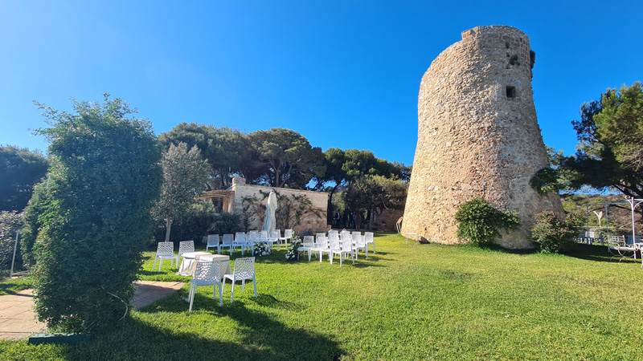
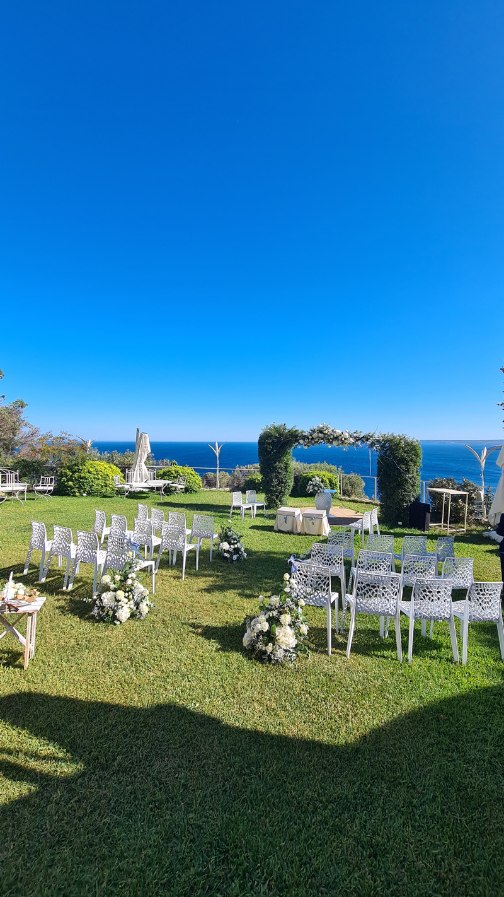

Gli ultimi anni hanno visto una profonda trasformazione nel modo di concepire il matrimonio. Mentre in passato le nozze erano grandi eventi con centinaia di invitati, oggi le coppie scelgono sempre più spesso celebrazioni intime con un gruppo selezionato di persone care. Questo cambiamento non riflette solo circostanze esterne, ma rappresenta una vera e propria evoluzione culturale che mette al centro l'autenticità e i valori essenziali.
I Vantaggi di un Matrimonio Intimo
Più Personale e Autentico
Le cerimonie intime creano atmosfere significative dove gli sposi trascorrono tempo di qualità con le persone più vicine. Questo permette di essere pienamente presenti, senza sentirsi sopraffatti dalle esigenze organizzative.
Maggiore Cura dei Dettagli
Un matrimonio raccolto permette di curare ogni elemento — dagli allestimenti floreali alla scelta del menù — rispecchiando i gusti e la personalità della coppia, creando uno spazio che li rappresenti autenticamente.
Flessibilità e Meno Stress
Organizzare un matrimonio più piccolo riduce la complessità logistica e lo stress. La scelta della location diventa più flessibile, permettendo soluzioni non convenzionali pur mantenendo un'alta qualità gastronomica.
Budget Ottimizzato
Con meno ospiti, il budget disponibile può essere concentrato su ciò che conta davvero: una location esclusiva, un catering di eccellenza, dettagli curati. Qualità invece di quantità.
L'Evoluzione delle Tradizioni Matrimoniali
I matrimoni storici erano grandi eventi sociali, dove la presenza degli invitati rappresentava il prestigio della famiglia. Le coppie di oggi — in particolare i Millennial e la Generazione Z — privilegiano le esperienze significative rispetto agli sfoggi di lusso. Il matrimonio viene vissuto sempre più come espressione personale piuttosto che come obbligo sociale, consentendo una personalizzazione creativa della cerimonia.
Questa tendenza era già in atto prima della pandemia e si è ulteriormente consolidata negli anni recenti. I matrimoni intimi non sono una moda passeggera: sono il segno di un cambiamento culturale profondo nel modo di vivere e celebrare l'amore.
La Bellezza della Semplicità
I matrimoni intimi portano con sé un'autenticità intrinseca. Ogni momento acquista un peso e un significato maggiori, e gli sposi vivono appieno la loro giornata speciale circondati solo dalle persone che contano davvero. Questo riporta il matrimonio alla sua essenza più pura: ricorda che il valore della semplicità conta più della quantità di ospiti.
Scegliere un matrimonio con pochi invitati significa riscoprire la bellezza essenziale, non rinunciare a qualcosa di speciale. La differenza rispetto al passato sta nel valorizzare le esperienze personali autentiche rispetto al conformarsi alle aspettative sociali.
State pensando a un matrimonio intimo nel Salento?
Cala dei Balcani è la location perfetta per celebrazioni riservate ed esclusive. Contattateci per scoprire le nostre proposte su misura.

